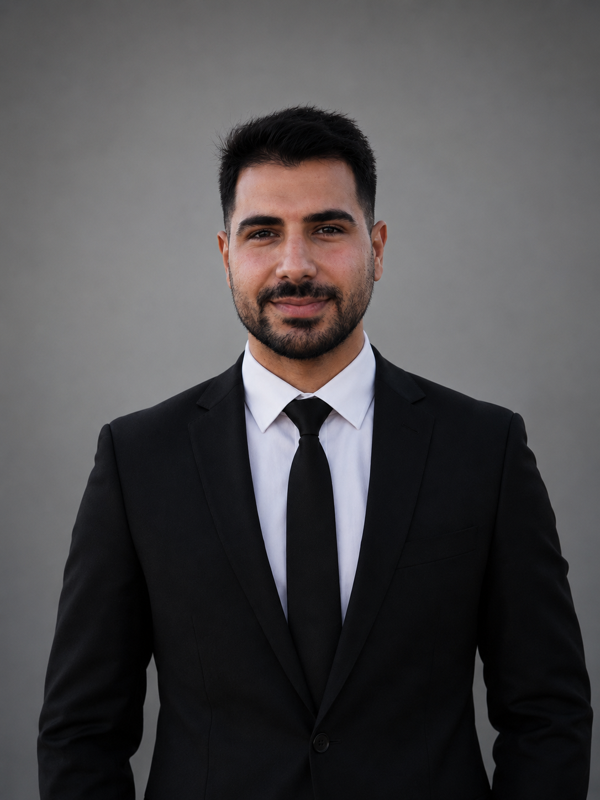

İşaret Dili Tanıma Sistemi
Kamera tabanlı gerçek zamanlı işaret dili tercüme sistemi. İşitme engelliler için geliştirildi ve TEKNOFEST'te 99 puan ile finale kaldı.

Modern ve yaratıcı çözümler üreten bir Bilgisayar Mühendisi
Recep Tayyip Erdoğan Üniversitesi Bilgisayar Mühendisliği bölümündeki akademik eğitimimi 3.05 ortalama ile tamamladım. Eğitim hayatım boyunca yapay zekâ, derin öğrenme ve veri analitiğine yoğunlaşarak TEKNOFEST ve TÜBİTAK destekli projelerde (otonom araçlar, akıllı tarım, işaret dili tanıma) geliştirici olarak aktif rol aldım. Ayrıca finansal teknolojiler (FinTech) alanında geliştirdiğim Web3 tabanlı bağış platformu (TrustChain) ile bu alandaki inovasyon yetkinliğimi pekiştirdim.
Profesyonel kariyerimin altyapısını Petlas (AKO Grup) ve MindMons Technologies bünyesinde edindiğim staj tecrübeleriyle şekillendirdim. Petlas'ta Active Directory, VMware ESXi, Veeam Backup ve ağ güvenliği yönetiminde güçlü bir sistem vizyonu kazanırken; MindMons'taki uzun dönem stajımda Python, FastAPI, React, AWS, Web3 ve Docker gibi modern teknolojilerle uçtan uca (full-stack) proje geliştirme ve canlıya alma süreçlerini yönettim.
Köklü donanım ve sistem mimarisi altyapımı, yenilikçi yazılım ve siber güvenlik teknolojileriyle harmanlayarak sosyal fayda sağlayan, güvenli ve ölçeklenebilir sistemler inşa etmeyi hedefliyorum. Gerçek dünya problemlerine çözüm üretmeyi seven, vizyoner ve üretken bir mühendis adayıyım.
4. Sıra - 3490 Takım İçinden
Dijital Tarım Platformu
Sistem & Ağ Mühendisliği
Full-Stack & Web3
Kamera tabanlı gerçek zamanlı işaret dili tercüme sistemi. İşitme engelliler için geliştirildi ve TEKNOFEST'te 99 puan ile finale kaldı.
Fuzzy logic ile kişiselleştirilmiş öneriler sunan artırılmış gerçeklik platformu.
Coğrafi tabanlı, güvenli ticaret sağlayan hayvan alım-satım platformu.
ESP32-S3 tabanlı çoklu sensör sistemi ile çevre izleme ve uyarı platformu.
Deneyap Kart tabanlı, robot kol ve adaptif sistem içeren otonom araç. 3490 takım arasından ilk 20'ye girerek İstanbul finallerinde 4. oldu.
Robolig 4.'sü olan aracın gelişmiş versiyonu. RFID entegreli robot kol, 3D baskı stabil gövde ve zipline görevleri için adaptif tutunma mekanizması.
Polygon ağı üzerinde Solidity ile geliştirilen, çoklu imza güvenlik altyapılı akıllı kontrat tabanlı şeffaf bağış ve afet fonu yönetim sistemi.
FastAPI + React mimarisiyle, NLP tabanlı duygu analizi ve LSTM/FinBERT ile Bitcoin yön tahmin sistemi. Docker & AWS ile canlıya alındı.
dlib 68 yüz işaretleyici ve OpenCV ile sürücülerin yorgunluk ve mikro-uyku durumlarını gerçek zamanlı tespit eden sistem.
TÜBİTAK destekli bitirme tezi. Flutter & Firebase ile geliştirilen, CNN görüntü işleme ve LSTM fiyat tahmini modüllü çapraz platform tarım uygulaması.
TEKNOFEST'te finalist olduğumuz bu projede, işitme engellilerin işaret diliyle yaptığı hareketleri, kamera aracılığıyla algılayıp metne ve sese dönüştüren bir sistem geliştirdik...
Devamını OkuBaşlı başına ihtiyaçtan doğmuş bir fikir: "İnek alım-satım" gibi niş bir alanda güvenli ve kolay ticaret...
Devamını OkuTEKNOFEST başvurusu sadece bir proje fikriyle başlamıyor; teknik yeterlilik, toplumsal fayda ve uygulanabilirlik hepsi bir arada gerekiyor...
Devamını OkuPetlas'ta sistem ve network alanında yaptığım stajda, ilk kez profesyonel ağ ortamında çalıştım...
Devamını OkuYazılım öğrenmenin dönüm noktası: algoritma mantığını kavramak. Başlangıçta kod yazmak sadece bir "çalışıyor mu?" sorusuydu...
Devamını OkuYapay zekâ, artık sadece teknik bir alan değil; etikle doğrudan iç içe. Proje geliştirirken hep şu soruları sormaya başladım...
Devamını OkuMindMons Technologies'te tam yığın yazılım geliştirici olarak çalışarak, FastAPI, React, AWS ve Web3 teknolojileriyle gerçek dünya projelerini canlıya aldım...
Devamını Oku